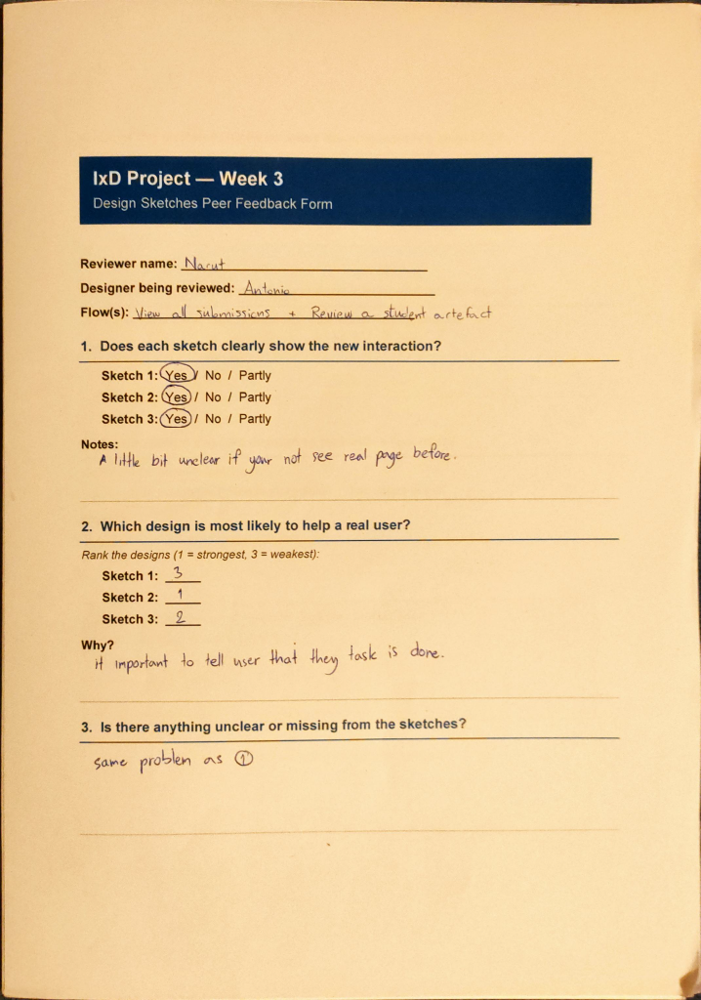
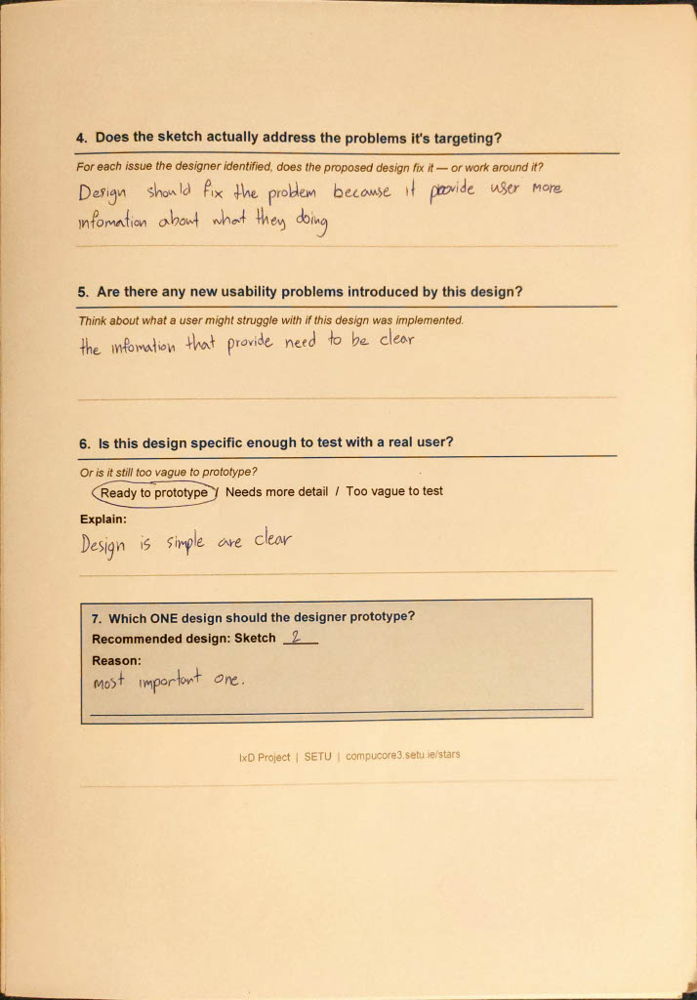
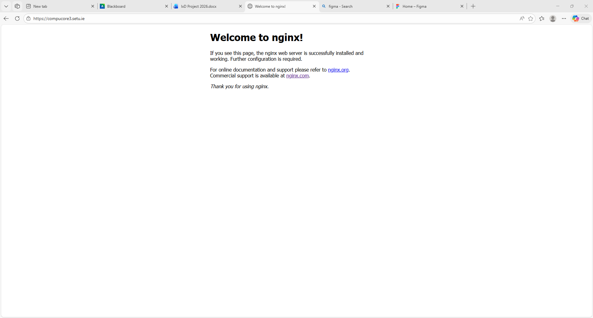
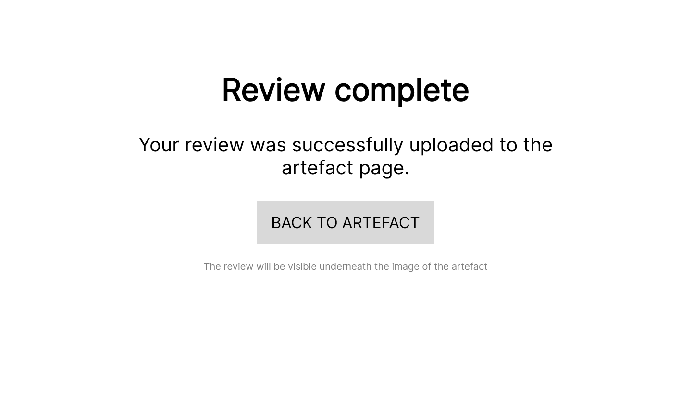

- Flow 1 - View all submissions:
A user has to navigate from the compucore3 website home page to the "All artefacts" page to view all the artefacts submissions. - Flow 2 - Review a student’s artefact
A user has to navigate from the "All artefacts" page to a specific artefact page and leave a review of said artefact.
| Flow 1 - Overview | |
|---|---|
| Flow name | Viewing all submissions |
| User role | Teacher |
| Trigger (why does the user start this?) | The user is tasked to view the artefacts on the compucore3 website |
| End state (what does success look like?) | The user is going to be in the page of the last artefact of the list of artefacts found in the compucore3 website |
Flow summary: The user navigates from the compucore3 home page to the "All artefacts" page by pressing the button with the same text found on the top middle of the home page. Then the user will be able to access any of The artefacts by clicking on any of the rows of the list that contains some informations about each artefact.
| # | User Action | System Response | User's Goal | Pain Point / Issue? |
|---|---|---|---|---|
| 1 | From the compucore3 home page the user presses the “All artefacts” button in the top- middle of the screen | The system takes the user to the “All artefacts” screen that shows a list of all the submitted artefacts by other users | The user wants to get to the page of the compucore3 website that shows all the artefacts submissions | The buttons on the top of the screen are of a bland color (compared to the design of the rest of the page) and are very slim. Any user could easily miss them |
| 2 | The user clicks one the rows in the list of artefacts | The system takes the user to the artefact page | The user wants to access one of the artefacts of the list | --- |
| 3 | The user is in the artefact page and can view the artefact | The system shows the artefact | The user wants to see the artefact | --- |
| 4 | The user presses the “All artefacts” button again to go back to the list of artefacts | The system takes the user to the artefacts page again | The user wants to go back to the “All artefacts” page to see the list again (to choose another one) | The user is sent back to the “All artefacts” page but the page is just a list with barely any “fancy” graphical elements which, combined with the fact that the user is sent back to the start of the list each time, it makes tedious to navigate back to the row of the same artefact |
| Flow 2 - Overview | |
|---|---|
| Flow name | Reviewing a student’s artefact |
| User role | Teacher |
| Trigger (why does the user start this?) |
The user is tasked to review a student’s artefact |
| End state (what does success look like?) |
The user will be in the artefact of the student of their choice |
Flow summary: The user navigates from the "All artefacts" page to one of the artefacts page to leave a review. After finding the form, the user compiles it by clicking on all the necessary radio buttons and then fills in the text boxes that appear afterwards. To finish off the user presses the "Done" button and gets redirected to a confusing page, they then go back to the artefact page to check if their review has been successfully uploaded.
| # | User Action | System Response | User's Goal | Pain Point / Issue? |
|---|---|---|---|---|
| 1 | From the “All artefacts” page the user will be able to select one of the artefacts in the list by pressing the corresponding row | The system takes the user to the appropriate artefact page that the user has selected. | The user wants to access the artefact’s page to be able to review it | --- |
| 2 | From the page the user scrolls down to see a form-like section for the reviewing of the artefact | The system moves the page up revealing that underneath the section of the page that shows the artefact, there is a section that is forum-like with radio buttons for reviewing the artefact | The user wants to access a section that would allow them to review the artefact | The page lacks artistic design elements so it is not intuitive what the user has / can do when they access it. This especially affects the side scroll bar so the user doesn’t know that they can scroll down unless they try to |
| 3 | The user then compiles the form by selecting one of three options Yes, No or Not applicable for each question on the form. | Each time one of the answers options is selected for each question, a text box appears underneath the question | The user wants to review the artefact | --- |
| 4 | The user fills the texts box with an appropriate description of why they’ve selected the answer for the corresponding question | The system doesn’t apply any changes to the page | The user wonders if the text boxes are mandatory and compiles them to make a more specific review | The website doesn’t tell that there would be text boxes before showing them, leaving the user confused as there are also no indications if the text boxes are mandatory or not, or even if the maker of the artefact will be able to see them |
| 5 | The user, once completed the form, presses the “Finish” button | The system sends the user to a different page | The user wants to send the completed form to the system | The page that the user is redirected to is not clear and the user remains confused as there is no back button or a clear statement that the form has been successfully sent |
| 6 | The user goes back to the artefact page by pressing the back button provided by the browser | The system shows the artefact page again | The user wants to go back to the artefact page to see if the review they have sent has been successfully uploaded | --- |
| 7 | The user searches and sees their review in the section that contains the informations regarding the artefact | --- | The user wants to confirm that the review they’ve sent has been correctly uploaded | The absence of clear graphical elements makes, once again, difficult to find the confirmation result in the user having to thoroughly search the whole page |
| # | Flow | Where in the flow? (step/screen) |
What happened? | Why is this a problem? | Severity |
|---|---|---|---|---|---|
| 1 | 1 | Step 1 | The user had difficulty navigating the menu | The user can’t complete their set objective (on the very first step) | |
| 2 | 1 | Step 4 | The user is sent to the top of the artefact list every time he goes back to the list page | The user has to scroll back down to the one they were looking at, and the absence of graphical decorations makes finding the previous one more tedious | |
| 3 | 2 | Step 2 | The user is confused when they open the artefact page for the first time | The user would have to take more time than needed to understand what they’re doing in the page | |
| 4 | 2 | Step 4 | The user is confused as there were no indication of text boxes and if these text boxes are mandatory or not | The user doesn’t know if the textboxes are mandatory and they might get annoyed / frustrated if they find out later that they needed to fill them | |
| 5 | 2 | Step 5 | The page that the user is redirected to is unclear. The user doesn’t know if their review has been uploaded successfully | The user might get frustrated if they found out that the review hasn’t been uploaded successfully, which may also happen after some time rather than immediately after since there is no clear indication | |
| 6 | 2 | Step 7 | The user wants to confirm that their review has been successfully uploaded and spends a lot of time finding it as the section that contains the review has poor graphical elements and as such is easy to miss | The user will take more time than needed to confirm that their review has been successfully uploaded (also takes longer because the confirmation page is poorly made as stated previously) |
| Pain Point 1 | |
|---|---|
| Severity | |
| Violated Heuristic | Heuristic 3 |
| Issue | The user can't freely move as easily as they should because of the poor button design |
| Solution | Improve the quality of the design (mostly increase the size and add a title) to the section that contains the buttons for navigation |
| Pain Point 5 | |
|---|---|
| Severity | |
| Violated Heuristic | Heuristic 1 |
| Issue | Upon completing the form, the page that the user is redirected to is confusing and doesn't provide good feedback. |
| Solution | Fix the page that the user is redirected to by adding adding a feedback message and better graphical elements to avoid confusion |
| Pain Point 4 | |
|---|---|
| Severity | |
| Violated Heuristic | Heuristic 1 |
| Issue | The page doesn't provide any feedback when the user selects a radiobox, ehen a textbox appears or is filled |
| Solution | Add more explanatory text to specify that the user has to fill the textboxes and to tell the user that, whenever a radiobox is selected, a textbox will appear |
| SKETCH 1 |
|---|
HAND SKETCH --- MENU BUTTONS PROBLEM

|
|
REASON:
This solves the issue as the user will now be able to understand clearly the
functionality of the navigation menu section of the screen. Also the with an
improved graphical design the user eill be able to notice it faster.
|
| SKETCH 2 |
|---|
HAND SKETCH --- UNCLEAR REDIRECTED PAGE PROBLEM

|
|
REASON:
This solves the issue as the user will now be able to understand clearly if
their review of the artefact has been successfully uploaded. Also the user
will be able to easily go back to the artefact page via the "continue" button
without needing to use the "back to previous page" button of the browser.
|
| SKETCH 3 |
|---|
HAND SKETCH --- UNCLEAR FORM PROBLEM

|
|
REASON:
This solves the issue as the user will now be able to understand clearly if they
will have to fill in the text boxes and also that there will be text boxes in the
form.
|
| Peer Feedback Form --- Reviewer name: Narut | |
|---|---|
|
 |
 |
| Figma Prototype link |
|---|
|
Mid-fidelity prototype that shows a solution of the issue presented
in the SKETCH 2. The prototype resembles all the steeps of FLOW 2. Figma prototype |
| BEFORE |
|---|
|
 |
| AFTER |
|---|
|
 |
| WHAT CHANGED |
|---|
| The complex text has been changed with clear text that explicitly tells the user that their review of the artefact has been uploaded. The user is also given a button in-page to return back to the artefact page. Underneath the button the user can read a line of text that tells them that the submitted review will be found under the picture of the artefact |